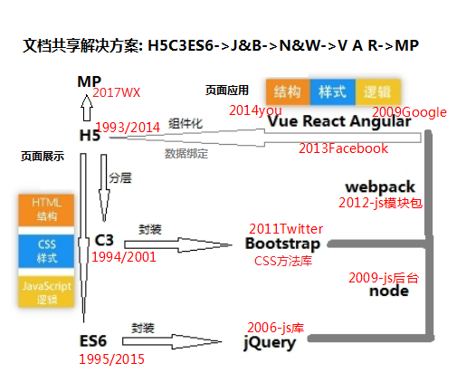

JavaScript很吸引我，因为它能够快速构建一些东西并分享给别人。把它放在网上，通过一个网址，任何有浏览器的人都可以看到。这就是吸引我开始 Web 开发和 JavaScript 编程的原因。--尤雨溪。
H5: 标签， 1989年伯纳斯-李为了研究人员实现文档共享，提出一个基于互联网的超文本系统，1993年发布首个HTML规范提案：超文本标记语言（HTML） 1993年伯纳斯-李发布首个HTML规范的提案：“超文本标记语言（HTML）”互联网草案。2014年10月28日，HTML5作为稳定W3C推荐标准发布。
C3: 布局， HTML规范虽然规定了网页中的标题、段落应该使用的标签，但是没有涉及这些内容应该以何种样式(比如大小、位置、间距、缩进等属性)呈现在浏览器中。 1994年，在芝加哥一次会议上哈肯·维姆·莱提出了含有层叠主意的CSS，一个文件的样式可以从其他的样式表中继承下来。 2001年5月23日W3C完成了CSS3的工作草案，主要包括盒子模型、列表模块、超链接方式、语言模块、背景和边框、文字特效、多栏布局等模块,从2006年到2009年，“DIV+CSS”布局逐步取代缺乏灵活性的传统表格布局，无表格网页设计成为网页内容布局的主流方案。到2017年为止，第3版规则还未完备.
ES6：逻辑， 1994年网景公司成立，公司需要一种胶水语言，让网页设计师可以很容易地使用它来组装图片和插件之类的组件，且代码可以直接编写在网页标记中，在浏览器中运行，减少服务端的负担。1995年12月4日发布了javascript。ES6为ECMAScript2015,是ECMA-262标准化脚本程序设计语言的一种实现,目前最新版本是ES9。 js语言核心是数组遍历与字符串截取，对象作用域与this，原型链__proto__与函数继承，异步回调Promise函数，文档接口webAPI。
JQuery： 方法库， JavaScript开发的过程中，处理浏览器的兼容很复杂而且很耗时，于是一些封装了这些操作的库应运而生。这些库还会把一些常用到的方法进行封装写到一个单独的js文件，使用的时候直接去引用这js文件就可以了。2006年1月约翰·雷西格在BarCamp NYC上发布jQuery第一个版本。jQuery设计的宗旨是'Write Less，Do More'，它封装JavaScript常用的功能代码，提供简便的DOM操作、事件处理、动画设计和Ajax交互。具有独特的链式语法和短小清晰的多功能接口；具有高效灵活的css选择器，并且可对CSS选择器进行扩展；拥有便捷的插件扩展机制和丰富的插件,兼容各种主流浏览器,极大地简化了JavaScript编程。
Node：模块化 为了编写高性能web服务器，2009年5月Ryan Dahl对Chrome V8引擎进行了封装开发了Node.js语言,让 JavaScript能运行在服务端的开发平台。异步I/O、事件驱动，是高性能服务器的原则，JavaScript是单线程执行的，天然的只能使用异步I/O。
Bootstrap： 由Twitter开发者制作的一套可以保持一致性的工具和框架，在Bootstrap之前，开发界面需要使用不同的代码库，这样很容易导致不一致的问题，从而增加了维护的负担。 2011年8月19日将其作为开源项目发布。
webpack: 模块包 网页做成功能丰富的应用，就会有复杂的JavaScript代码和一大堆依赖包，需要模块化把复杂的程序细化为小的文件，同时这些文件往往需要进行额外的处理才能让浏览器识别,webpack工具就是为了处理这些问题。Webpack初始版本是2012年3月10日，Webpack仓库创建者Tobias Koppers,一开始是写Java的,Java里面有个很出名的技术叫GWT,把Java代码转换成JavaScript,GWT里面有个feature叫code splitting，于是他当时给用来做前端项目Bundle的node.js库modules-webmake提了一个issue，解决web打包中的模块化的问题，code splitting就是Webpack现在提供的主要功能。到了2014 OSCON 大会Instagram的前端团队分享了他们对前端页面加载性能优化，其中很重要的一件就是用到的Webpack 的code splitting，当时引起了很大的轰动，之后大家纷纷使用Webpack，并给Webpack 贡献了无数的 plugins、loader，于是webpack迅猛发展成为现代前端的基石。
Angular: Angular是为了克服HTML在构建应用上的不足而设计的，虽然HTML是一门很好的为静态文本展示设计的声明式语言，但要构建WEB应用就显得乏力。Angular试图成为WEB应用中的一种客户端的解决方案,主要考虑的是构建CRUD（增加Create、查询Retrieve、更新Update、删除Delete）应用，不太适合游戏等界面操作频繁的应用，更高层的抽象技术必然会损失一些灵活性。Angular诞生于2009年，由Misko Hevery 等人创建，后为Google所收购，最为核心特性的是：MVC（Model–view–controller）、模块化、双向数据绑定、语义化标签、依赖注入等等。
React： React由Facebook 的软件工程师Jordan Walke创建，用于构建javascript的UI框架，核心是函数式组件，他受到PHP的HTML组件框架XHP影响，该框架于2012年部署在Instagram，于2013年5月在JSConf US开源。React提供jsx语法来渲染数据，允许开发者在JavaScript中书写HTML。
Vue: 是一套渐进式构建javascript的UI框架，提供HTML模板渲染数据，核心是 数据绑定与组件系统作者尤雨溪在谷歌工作时对笨重的angular某些功能提取封装成轻量的vue,2014年2月第一次将它作为实际的项目发布在Github上，并把链接发送到了Hacker News 上。
MP: 为应用程序上加载的页面应用程序，微信自定义的一套web规范wxml+wxss+json+javascript。2017年1月9日，张小龙在2017微信公开课上正式发布小程序。
文档共享解决方案： 为了解决文档共享问题，html提出了标记语言解决方案；html没有涉及内容呈现样式，css提出样式层叠继承的解决方案；为让网页设计者在客户端也能实现简单的页面交互的逻辑减少服务器负担，javascript提供了脚本语言解决方案；为处理浏览器兼容问题提高开发效率简化DOM操作，jQuery提供了解决方案；因开发效率需要，使用多种代码库造成不一致问题，bootstrap提供解决方案；为了解决HTML能构建页面应用而不仅只是静态页面展示，以node、webpack为基础提供了数据双向绑定和组件化系统的工程化开发的VAR框架解决方案；为了能在应用程序上不仅只是在浏览器上运行页面应用程序，提供了小程序解决方案。
从制作静态页面的标记语言H5C3脚本语言ES6，到为高效操作封装的js库jQuery、css库Bootstrap，到以node、webpack为基础组件化工程化开发，实现页面应用程序VAR框架，最后为实现在应用程序上运行页面应用程序的小程序框架。伴随互联网大发展，文档共享就由简单的页面制作发展成今天复杂的应用开发。JavaScript发展到今天也是历经坎坷，早产的缺陷是永久性的，在Bable.js出来之前，不断有发明一门新的语言代替呼声，但它是所有浏览器的内置脚步语言，于是有源源不断的类库框架革新自己，Prototype.js带来的原型方法，jQuery带来的选择器方法，实现MVVM不可缺少的对象属性内省机制(getter,setter,Reflect,Proxy)，大规模编程需要的class,modules。
编程就是发现问题，解决问题，提供问题的解决方案，文档共享编程最终目标是状态与UI同步。